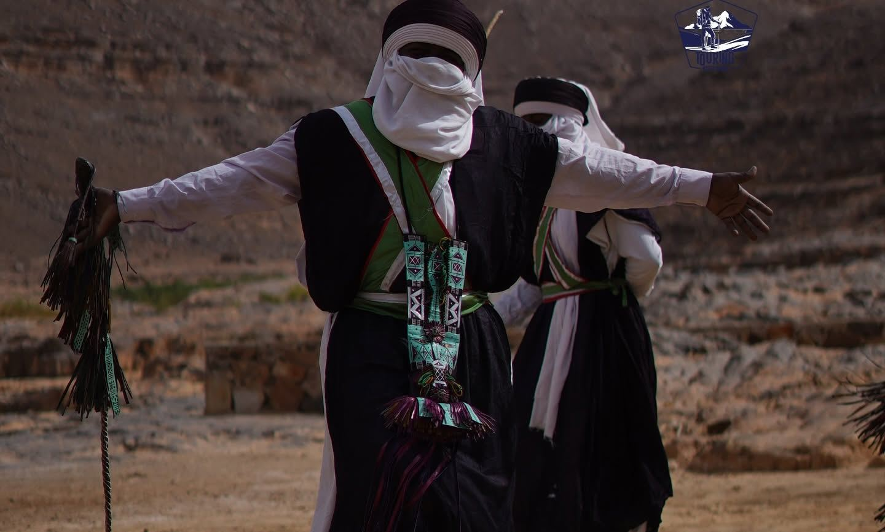

Le blog du désert
Conseils, saisons et récits pour préparer votre voyage à Djanet.
Contenu illustratif, modifiable
Que faire à Djanet : 8 expériences à vivre dans le Sahara algérien
Lire l'article
Quand partir à Djanet ? La meilleure saison pour le Sahara
Lire l'article
Tadrart Rouge : le guide pour préparer votre expédition
Lire l'article
Préparer son voyage dans le Sahara algérien : visa, vols et bagages
Lire l'article
La Sebiba de Djanet : un rituel touareg classé par l'UNESCO
Lire l'articleVotre voyage à Djanet commence par un message
Dites-nous vos dates et vos envies. Mina vous répond personnellement sous 24 heures.